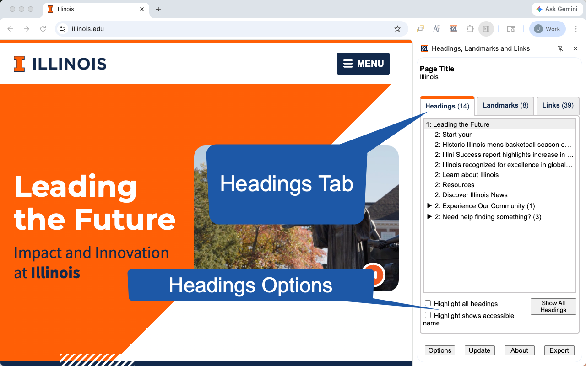

Headings Tab

Features
-
The first tab provides a tree view of the heading (e.d. the
h1,h2,h3,h4h5andh6elements) structure of a web page. - Each tree item provides the heading level and the accessible name used by screen readers.
- The tree items are indented based on their heading level.
- Headings level 3 and higher are initially hidden in the tree.
- Note: Some authors add hidden or off-screen headings that are intended only for screen reader users and cannot be seen in the graphical rendering. These headings are not included in the list of headings by default. This mimics the behavior of many screen readers to reduce the number of headings users have to navigate. This feature can be disabled in options.
Options
| Highlight all headings | Highlights all the headings on the page. |
|---|---|
| Highlight shows accessible name | Shows the accessible name as part of the highlight. |
| Show All Headings | Expands all the hidden headings in the list of the headings. |
Accessibility Considerations
| Descriptive | Verify headings accurately reflect the content they introduce. For example, a heading "Ingredients" should be followed by a list of ingredients, not instructions on how to prepare them. |
|---|---|
| Logical Hierarchy |
Verify headings are used in a hierarchical order, typically starting with h1 for the main page title, followed by h2 for main sections, h3 for subsections, and so on. Avoid skipping heading levels (e.g., going directly from h1 to h3).
|
| Unique Headings | Verify headings in the same sub-section are unique. This prevents confusion for users, especially those using screen readers, who rely on headings for navigation. |
| Concise and Clear | Verify headings are relatively short and to the point, avoiding overly long or complex phrasing. |
| WCAG Requirements |
|
| More Information |